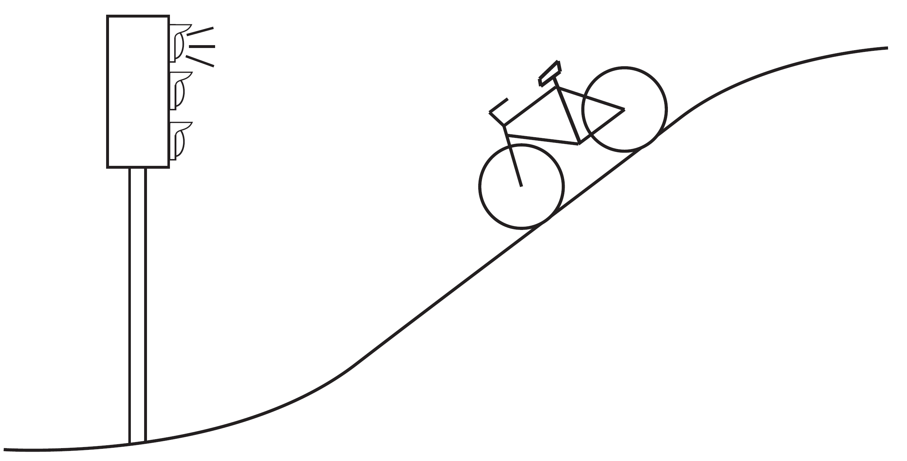
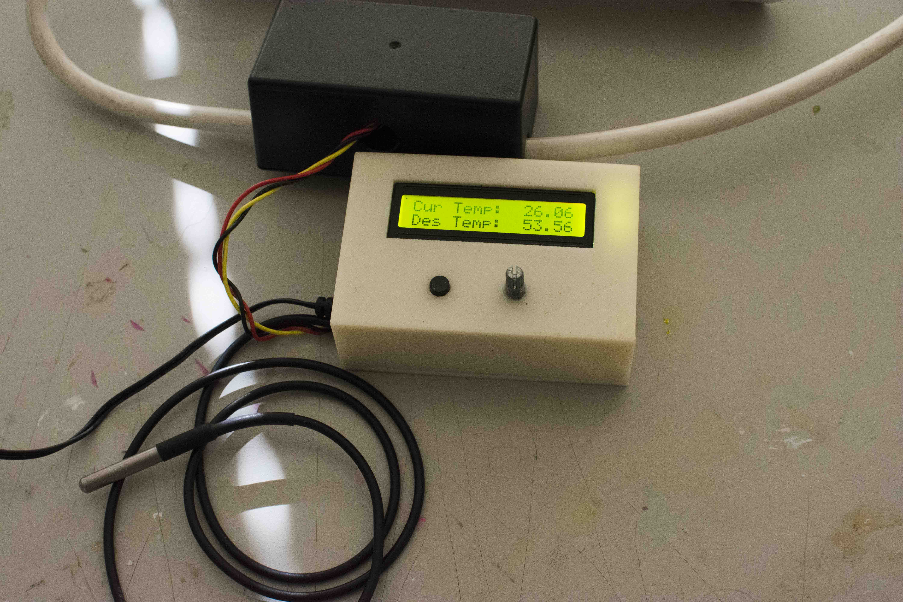
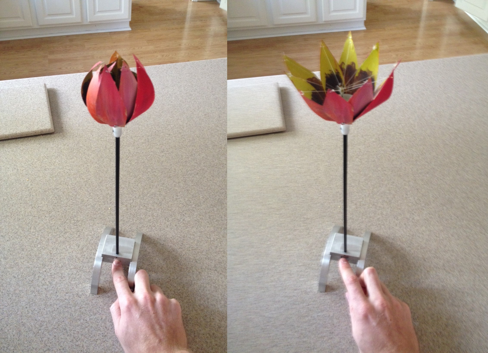

Kevin Haninger
I am a robotics and controls researcher working on the design and control of compliant robots in manipulation and human-robot interaction.
I am currently affiliated with Fraunhofer IPK in Berlin. I've previously worked at Franka Emika in Munich, Space Sciences Lab in Berkeley, Space Robotics Lab in Sendai, and consulted for Gate Labs in San Francisco.
My academic training is in Mechanical Engineering; I completed my Ph.D. at UC Berkeley in 2016 under the supervision of Professor Masayoshi Tomizuka. I earned my M.S. and B.S. at UC Berkeley in 2015 and 2012 respectively, with a minor in Electrical Engineering.
I co-founded AbilityHacks and EnableTech with Francisco Peralta and Anderew McPherson, volunteer organizations to support DIY assistive technologies for people with disabilities.
Emails welcome at khaninger@gmail.com
Publications
Blog
Business models in robotics [01.05.2024]
Kuhn's paradigms in innovation [06.06.2021]
Causal Desires [17.08.2020]
Miscellaneous Projects
- Dual Leslie
- The Leslie speaker realizes a sort of tremelo effect mechanically via a downwards-facing speaker and a rotating baffle which directionally projects this sound. I was interested in the effect of having two such speakers at different speeds (and possibly, different spatial locations), and built two simple ones to test. The rotational speeds of each drum and the relative volume of each can be controlled via knobs.
- Optimal downhill bicycling
- When biking downhill towards a stoplight, should one stop at the top until a green light? Or only brake as necessary to not run the light? This problem is formalized and solved as an optimal control problem. When the time of switch to green light is known, braking should be done as early as possible - leaving more potential energy to be harvested when the light turns green. Derivation here (PDF).

- Trash
- Re-use plastic produce bags for organic waste, lid to mange odor/flys and can be operated with hands full of scraps. Macrame courtesy of the talented Mrs. Cassie Seo.
- Sous-vide Controller
- Toggle the power for a rice cooker to regulate temperature to set-point, thus holding a water bath at a specific temperature for controlled cooking. The control is simple bang-bang control, but large delay between actuator (heating element on bottom of pan) and sensing (temperature probe in water) required some cheap derivative control - changing control action when approaching the set-point.

- Diving Dolphins
- Gift for my sister; two four-bar linkages. Paint courtesy of the talented Mrs. Cassie Seo.
- Mechanical Flower
- Flower which opens/closes at the push of a lever, made from two aluminum cans, bike brake cable, fishing line.
